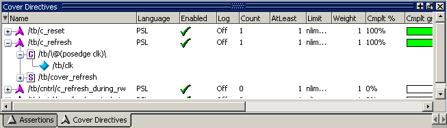

The Cover Directives
window displays information about cover directives.
Procedure
- To open
the Cover Directives window, select .
- Figure 1 shows PSL cover directives in the Cover
Directives window. PSL cover directives are indicated by a purple
chevron. SystemVerilog cover directives (not shown) are indicated
by a light blue chevron.
Figure 1. PSL Cover Directives
in the Cover Directives Window
- The Cover Directives window
displays accumulated cover directive statistics at the current simulation
time, including percentages and a graph for each directive and instance.
The plus sign (’+’) to the left of the Name field lets you expand the
directive hierarchy to show its elements (properties, sequences,
clocks, and HDL signals). Refer to “Cover Directives Window” in the GUI Reference Manual for
a description of each column.